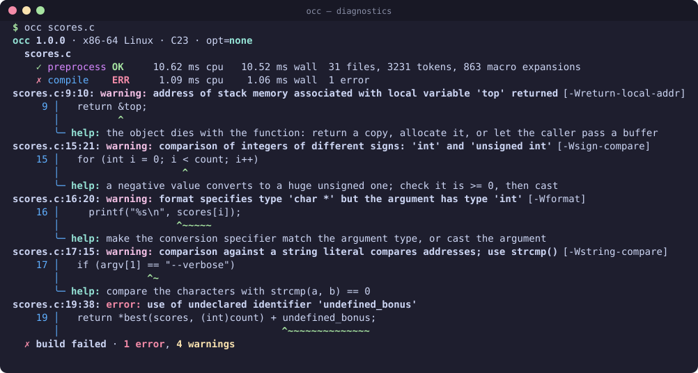
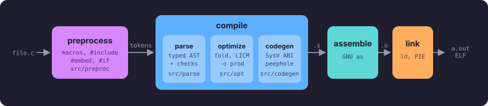
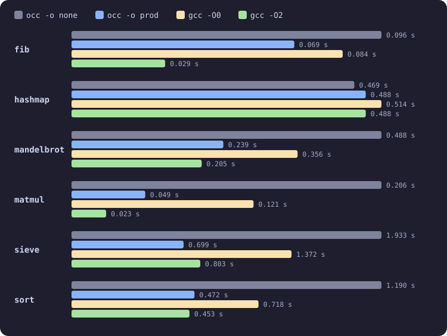

occ is a self-hosting C23 compiler for x86-64 Linux, written in C23 — its own preprocessor, parser, optimizer and code generator, with a live pipeline display and diagnostics that tell you how to fix things.

No black box: every stage reports what it did and how long it took, and the source is small enough to read.
Preprocessor, typed-AST parser, optimizer and x86-64 code generator are occ's own. GNU as and ld finish the job — PIE, full RELRO, NX stack.
Stages animate while they run, show CPU and wall time, and the summary charts where the time went. Pipes get plain, GCC-compatible text.
Source excerpts, help: hints and 27 named warnings aimed at undefined behavior and deprecated features.
-o none is obviously correct; -o prod adds register allocation, addressing modes, LICM, jump tables and a peephole pass.
constexpr, auto, typeof, nullptr, #embed, attributes, <stdckdint.h>, typed enums, #pragma pack.
occ builds occ, and that compiler builds occ again: both emit byte-identical assembly — a bootstrap fixpoint, checked in CI.
-o prod than -o noneThe first line keeps GCC's file:line:col format so editors understand it; below it, the source line, the warning's name and a hint.

A fully typed AST — every implicit conversion made explicit — feeds a code generator that starts as an obviously correct stack machine and, at -o prod, removes its costs.

Best of three runs; every build prints the same checksum. -o prod beats gcc -O0 everywhere and stays within 20% of gcc -O2 on four of six benchmarks.
# build with optimizations and run occ -o prod examples/life.c --run -- 30 # compare against GCC yourself make bench

Built with occ at both optimization levels and checked with their own test suites, or byte for byte against GCC builds.
| Project | Size | Result |
|---|---|---|
| SQLite 3.53 | 307k lines | ✓ speedtest1 verification hash identical to GCC's |
| Duktape 2.7 | 108k lines | ✓ JavaScript test script: identical output |
| Jim Tcl 0.83 | 43k lines | ✓ 5551 of 5729 tests pass — the same as with GCC |
| Lua 5.4.9 | 30k lines | ✓ test script: identical output |
| zlib, bzip2, LZ4 | 51k lines | ✓ compressed output byte-identical to GCC builds |
| xxHash 0.8.3 | 12k lines | ✓ 49948 sanity-test vectors pass |
| Csmith | random | ✓ 500+ generated programs match GCC |
You need a C23 compiler to bootstrap (tested with GCC 13 and Clang 18), GNU binutils and the glibc headers — build-essential on Debian/Ubuntu, base-devel on Arch.
make # builds ./occ make test # every test, both levels sudo make install # /usr/local/bin/occ occ examples/hello.c --run occ --warnings # all 27 warnings